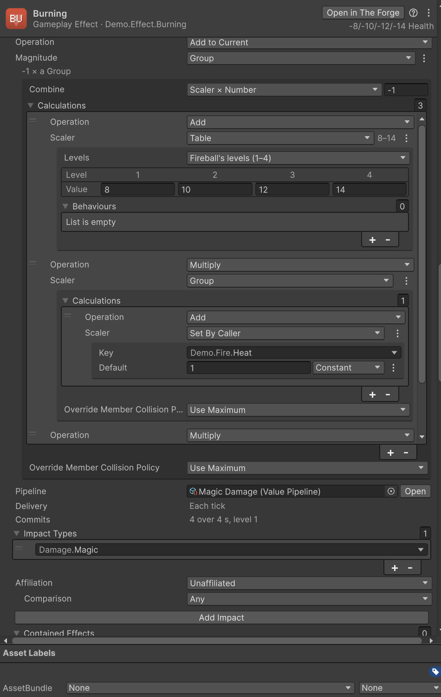

Impact
The impact is the change the effect makes to an attribute. The first fields are its first impact, whose delivery the duration gives it.

Burning's Impact section.
Additional Impacts change more attributes, or the same one again, each with a delivery of its own.
| Property | Description |
|---|---|
| Attribute | The attribute to change. Leave it empty for an effect that only grants tags, applies other effects or runs workers. |
| Operation | How the impact changes the attribute, and which of its values, in one choice, such as Add to Current or Multiply Base. See Operations. |
| Multiply Behaviour | Multiply only. How this multiply combines with other multipliers. |
| Add Behaviour | Add only, shown where it matters. How this add combines with others on the attribute. |
| Magnitude | The amount. See Magnitude. |
| Pipeline | The calculation each hit of the impact goes through as it lands, a Value Pipeline: the caster's bonuses, the target's reductions, a critical roll, a barrier. It runs for an instant impact's hit and each tick of a periodic one (Value Pipelines). |
| Delivery | Read-only. When the impact lands, which the duration gives it. See Delivery and commits. |
| Commits | Read-only, for a periodic impact. How many times it lands. |
| Impact Types | Tags that label the kind of change, such as Damage.Fire. Workers can accept or skip changes by type. |
| Affiliation | Which targets the effect can be applied to. See Affiliation. |
| Comparison | All but Always Allow. Whether one affiliation tag matching is enough, or every tag must match. |
| Affiliations | Use Affiliation List only. The tags the target is compared with. |
- A target that lacks the attribute isn't changed.
Never Allow, as an impact type, hides the change from workers that check types.Always Allowpasses every type check.
The section also holds the effect's Retention Group (Retention Group) and its Proc Coefficient (On Hit).
In this section
- Operations: The Operation sets how the impact changes the attribute, and which of its values it changes.
- Magnitude: The Magnitude is the amount the impact applies.
- Delivery and commits: The read-only Delivery and Commits rows say when, and how often, the first impact lands.
- Affiliation: Affiliation decides which targets the effect can be applied to.
- Additional Impacts: Each additional impact changes an attribute of its own, or the same one again, with a delivery of its own.
- Contained Effects: Contained effects are other effects this one applies, with the same origin.
- Retention Group: The Retention Group is the group this effect's changes count toward (default
Ignore), unless an impact names its own.